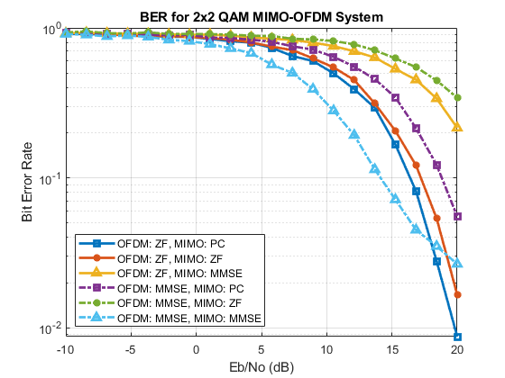

MIMO-OFDM Project
Alon S. Levin ECE-408: Wireless Communications Spring 2020 Part 3: MIMO-OFDM
Contents
Prepare Environment
clear, clc, close all % Clear all current variables and outputs format compact % Prepare command line output
Simulation Parameters
% System parameters M = 4; % Modulation order: QAM numSyms = 48e2; % Number of transmitted symbols numTx = 2; % Number of transmitters numRx = 2; % Number of receivers % Channel parameters numChan = 3; % Number of channels numSNR = 20; % Number of SNR values to check EbNo_vect = linspace(-10, numSNR, 20); % Eb/No vector SNR_vect = EbNo_vect + ... % SNR vector 10*log10(log2(M)) + ... % MIMO component 10*log10(64/80); % OFDM component % Rayleigh Channel parameters Ts = 1e-3; % Sample rate for Rayleigh Channel Fd = 0; % Maximum Doppler Shift tau = [0 Ts/5 Ts/3 Ts]; % Path delays pdb = [0 -2 -3.33 -10]; % Average path gain
Initialize BER Vectors
BER_x_y --> OFDM method x, MIMO method y
BER_ZF_PC = nan(1, numSNR); BER_ZF_ZF = nan(1, numSNR); BER_ZF_MMSE = nan(1, numSNR); BER_MMSE_PC = nan(1, numSNR); BER_MMSE_ZF = nan(1, numSNR); BER_MMSE_MMSE = nan(1, numSNR);
OFDM Zero-Forcing
for channel_ticker = 1:numChan % Build the Rayleigh channel rayleighchan = comm.RayleighChannel(... 'SampleRate', Ts, ... 'PathDelays', tau, ... 'AveragePathGains', pdb, ... 'MaximumDopplerShift', Fd, ... 'RandomStream','mt19937ar with seed', ... 'Seed', randi(1e7) ... ); % Build the MIMO channel H = sqrt(1/2)*(randn(numRx, numTx, numSyms) + 1j*randn(numRx, numTx, numSyms)); % Generate a transmit signal, split across two antennas tx_syms = randi([0, M-1], 1, numSyms); tx_syms_split = reshape(tx_syms, 2, []); tx_mod = qammod(tx_syms_split, M); % Convert signal to frames tx_ofdm_frames = makeOFDMframe(tx_mod); numFrames = size(tx_ofdm_frames, 2); % Apply IFFT tx_postifft = ifft(tx_ofdm_frames, 64); % Add cyclic prefix tx_withcp = [tx_postifft(49:64,:); ... tx_postifft]; % Transmit through the Rayleigh channel tx_rayleigh = zeros(size(tx_withcp)); channel_state = zeros(size(tx_withcp)); for frame_ticker = 1:numFrames tx_rayleigh(:, frame_ticker) = rayleighchan(tx_withcp(:, frame_ticker)); channel_state(:, frame_ticker) = rayleighchan(ones(80,1)); end % Add AWGN per SNR values to OFDM & MIMO, undo OFDM, apply MIMO % methods, find BER for SNR_ticker = 1:numSNR
currSNR = SNR_vect(SNR_ticker);
% Generate AWGN
rayleigh_awgn = 10^(-currSNR/20) * sqrt(1/2)^2 * ...
(randn(80, numFrames) + 1j*randn(80, numFrames));
% Add AWGN to the channel
tx_awgnchannel = tx_rayleigh + rayleigh_awgn;
% Strip cyclic prefix, apply FFT
rx_nocp = tx_awgnchannel(17:end, :);
rx_fft = fft(rx_nocp, 64);
% Apply zero-forcing equalizer
rx_zf = rx_fft ./ channel_state(17:end, :);
% Restore data after OFDM
rx_data = rx_zf([...
6:10, ... % -26 --> -22
12:24, ... % -20 --> -08
26:31, ... % -06 --> -01
33:38, ... % 01 --> 06
40:52, ... % 08 --> 20
54:58], :); % 22 --> 26
rx_data_reshaped = reshape(rx_data, 1, []);
% Reshape for MIMO
tx_mod = reshape(rx_data_reshaped, 2, []);
tx_mod = permute(tx_mod, [1, 3, 2]);
MIMO
switch channel_ticker % Pre-Coding case 1 % Perform SVD, pre-code, and apply the channel U = zeros(numRx, numTx, numSyms/numTx); tx_precode = zeros(numRx, 1, numSyms/numTx); tx_channel = zeros(numRx, 1, numSyms/numTx); for sym_ticker = 1:numSyms/numTx currH = H(:,:,sym_ticker); % SVD [U(:,:,sym_ticker), ~, currV] = svd(currH); % Pre-code tx_precode(:,:,sym_ticker) = currV * tx_mod(:,:,sym_ticker); % Apply the channel tx_channel(:,:,sym_ticker) = currH * tx_precode(:,:,sym_ticker); end % Generate AWGN mimo_awgn = 10^(-currSNR/20) * sqrt(1/2)^2 * ... (randn(numRx, 1, numSyms/numTx) + 1j*randn(numRx, 1, numSyms/numTx)); % Add AWGN to the channel tx_awgnchannel = tx_channel + mimo_awgn; % Post-code rx_postcode = zeros(numRx, 1, numSyms/numTx); for sym_ticker = 1:numSyms/numTx rx_postcode(:,:,sym_ticker) = U(:,:,sym_ticker)' * tx_awgnchannel(:,:,sym_ticker); end % Demodulate, compute BER rx_demod = squeeze(qamdemod(rx_postcode, M)); BER_ZF_PC(SNR_ticker) = mean(any(rx_demod ~= tx_syms_split)); % Zero-Forcing case 2 % Apply the channel tx_channel = zeros(numRx, 1, numSyms/numTx); for sym_ticker = 1:numSyms/numTx tx_channel(:,:,sym_ticker) = H(:,:,sym_ticker) * tx_mod(:,:,sym_ticker); end % Generate AWGN mimo_awgn = 10^(-currSNR/20) * sqrt(1/2)^2 * ... (randn(numRx, 1, numSyms/numTx) + 1j*randn(numRx, 1, numSyms/numTx)); % Add AWGN to the channel tx_awgnchannel = tx_channel + mimo_awgn; % Apply zero-forcing equalizer rx_zf = zeros(numRx, 1, numSyms/numTx); for sym_ticker = 1:numSyms/numTx currH = H(:,:,sym_ticker); W = (currH' * currH) \ currH'; rx_zf(:,:,sym_ticker) = W * tx_awgnchannel(:,:,sym_ticker); end % Demodulate, compute BER rx_demod = squeeze(qamdemod(rx_zf, M)); BER_ZF_ZF(SNR_ticker) = mean(any(rx_demod ~= tx_syms_split)); % MMSE case 3 % Apply the channel tx_channel = zeros(numRx, 1, numSyms/numTx); for sym_ticker = 1:numSyms/numTx tx_channel(:,:,sym_ticker) = H(:,:,sym_ticker) * tx_mod(:,:,sym_ticker); end % Generate AWGN mimo_awgn = 10^(-currSNR/20) * sqrt(1/2)^2 * ... (randn(numRx, 1, numSyms/numTx) + 1j*randn(numRx, 1, numSyms/numTx)); % Add AWGN to the channel tx_awgnchannel = tx_channel + mimo_awgn; % Apply MMSE equalizer rx_mmse = zeros(numRx, 1, numSyms/numTx); for sym_ticker = 1:numSyms/numTx currH = H(:,:,sym_ticker); W = (currH'*currH + eye(numTx)*10^(-currSNR/20)) \ currH'; rx_mmse(:,:,sym_ticker) = W * tx_awgnchannel(:,:,sym_ticker); end % Demodulate, compute BER rx_demod = squeeze(qamdemod(rx_mmse, M)); BER_ZF_MMSE(SNR_ticker) = mean(any(rx_demod ~= tx_syms_split)); end
end end
OFDM MMSE
for channel_ticker = 1:numChan % Build the Rayleigh channel rayleighchan = comm.RayleighChannel(... 'SampleRate', Ts, ... 'PathDelays', tau, ... 'AveragePathGains', pdb, ... 'MaximumDopplerShift', Fd, ... 'RandomStream','mt19937ar with seed', ... 'Seed', randi(1e7) ... ); % Build the MIMO channel H = sqrt(1/2)*(randn(numRx, numTx, numSyms) + 1j*randn(numRx, numTx, numSyms)); % Generate a transmit signal, split across two antennas tx_syms = randi([0, M-1], 1, numSyms); tx_syms_split = reshape(tx_syms, 2, []); tx_mod = qammod(tx_syms_split, M); % Convert signal to frames tx_ofdm_frames = makeOFDMframe(tx_mod); numFrames = size(tx_ofdm_frames, 2); % Apply IFFT tx_postifft = ifft(tx_ofdm_frames, 64); % Add cyclic prefix tx_withcp = [tx_postifft(49:64,:); ... tx_postifft]; % Transmit through the Rayleigh channel tx_rayleigh = zeros(size(tx_withcp)); channel_state = zeros(size(tx_withcp)); for frame_ticker = 1:numFrames tx_rayleigh(:, frame_ticker) = rayleighchan(tx_withcp(:, frame_ticker)); channel_state(:, frame_ticker) = rayleighchan(ones(80,1)); end % Add AWGN per SNR values to OFDM & MIMO, undo OFDM, apply MIMO % methods, find BER for SNR_ticker = 1:numSNR
currSNR = SNR_vect(SNR_ticker);
% Generate AWGN
rayleigh_awgn = 10^(-currSNR/20) * sqrt(1/2)^2 * ...
(randn(80, numFrames) + 1j*randn(80, numFrames));
% Add AWGN to the channel
tx_awgnchannel = tx_rayleigh + rayleigh_awgn;
% Strip cyclic prefix, apply FFT
rx_nocp = tx_awgnchannel(17:end, :);
rx_fft = fft(rx_nocp, 64);
% Apply zero-forcing equalizer
norm = conj(channel_state(17:end,:)) .* channel_state(17:end,:) + 10^(-currSNR/20);
rx_mmse = rx_fft .* conj(channel_state(17:end,:)) ./ norm;
% Restore data after OFDM
rx_data = rx_mmse([...
6:10, ... % -26 --> -22
12:24, ... % -20 --> -08
26:31, ... % -06 --> -01
33:38, ... % 01 --> 06
40:52, ... % 08 --> 20
54:58], :); % 22 --> 26
rx_data_reshaped = reshape(rx_data, 1, []);
% Reshape for MIMO
tx_mod = reshape(rx_data_reshaped, 2, []);
tx_mod = permute(tx_mod, [1, 3, 2]);
MIMO
switch channel_ticker % Pre-Coding case 1 % Perform SVD, pre-code, and apply the channel U = zeros(numRx, numTx, numSyms/numTx); tx_precode = zeros(numRx, 1, numSyms/numTx); tx_channel = zeros(numRx, 1, numSyms/numTx); for sym_ticker = 1:numSyms/numTx currH = H(:,:,sym_ticker); % SVD [U(:,:,sym_ticker), ~, currV] = svd(currH); % Pre-code tx_precode(:,:,sym_ticker) = currV * tx_mod(:,:,sym_ticker); % Apply the channel tx_channel(:,:,sym_ticker) = currH * tx_precode(:,:,sym_ticker); end % Generate AWGN mimo_awgn = 10^(-currSNR/20) * sqrt(1/2)^2 * ... (randn(numRx, 1, numSyms/numTx) + 1j*randn(numRx, 1, numSyms/numTx)); % Add AWGN to the channel tx_awgnchannel = tx_channel + mimo_awgn; % Post-code rx_postcode = zeros(numRx, 1, numSyms/numTx); for sym_ticker = 1:numSyms/numTx rx_postcode(:,:,sym_ticker) = U(:,:,sym_ticker)' * tx_awgnchannel(:,:,sym_ticker); end % Demodulate, compute BER rx_demod = squeeze(qamdemod(rx_postcode, M)); BER_MMSE_PC(SNR_ticker) = mean(any(rx_demod ~= tx_syms_split)); % Zero-Forcing case 2 % Apply the channel tx_channel = zeros(numRx, 1, numSyms/numTx); for sym_ticker = 1:numSyms/numTx tx_channel(:,:,sym_ticker) = H(:,:,sym_ticker) * tx_mod(:,:,sym_ticker); end % Generate AWGN mimo_awgn = 10^(-currSNR/20) * sqrt(1/2)^2 * ... (randn(numRx, 1, numSyms/numTx) + 1j*randn(numRx, 1, numSyms/numTx)); % Add AWGN to the channel tx_awgnchannel = tx_channel + mimo_awgn; % Apply zero-forcing equalizer rx_zf = zeros(numRx, 1, numSyms/numTx); for sym_ticker = 1:numSyms/numTx currH = H(:,:,sym_ticker); W = (currH' * currH) \ currH'; rx_zf(:,:,sym_ticker) = W * tx_awgnchannel(:,:,sym_ticker); end % Demodulate, compute BER rx_demod = squeeze(qamdemod(rx_zf, M)); BER_MMSE_ZF(SNR_ticker) = mean(any(rx_demod ~= tx_syms_split)); % MMSE case 3 % Apply the channel tx_channel = zeros(numRx, 1, numSyms/numTx); for sym_ticker = 1:numSyms/numTx tx_channel(:,:,sym_ticker) = H(:,:,sym_ticker) * tx_mod(:,:,sym_ticker); end % Generate AWGN mimo_awgn = 10^(-currSNR/20) * sqrt(1/2)^2 * ... (randn(numRx, 1, numSyms/numTx) + 1j*randn(numRx, 1, numSyms/numTx)); % Add AWGN to the channel tx_awgnchannel = tx_channel + mimo_awgn; % Apply MMSE equalizer rx_mmse = zeros(numRx, 1, numSyms/numTx); for sym_ticker = 1:numSyms/numTx currH = H(:,:,sym_ticker); W = (currH'*currH + eye(numTx)*10^(-currSNR/20)) \ currH'; rx_mmse(:,:,sym_ticker) = W * tx_awgnchannel(:,:,sym_ticker); end % Demodulate, compute BER rx_demod = squeeze(qamdemod(rx_mmse, M)); BER_MMSE_MMSE(SNR_ticker) = mean(any(rx_demod ~= tx_syms_split)); end
end end
Plot BERs
figure semilogy(EbNo_vect, BER_ZF_PC, '-s', 'LineWidth', 2) hold on semilogy(EbNo_vect, BER_ZF_ZF, '-*', 'LineWidth', 2) semilogy(EbNo_vect, BER_ZF_MMSE, '-^', 'LineWidth', 2) semilogy(EbNo_vect, BER_MMSE_PC, '-.s', 'LineWidth', 2) semilogy(EbNo_vect, BER_MMSE_ZF, '-.*', 'LineWidth', 2) semilogy(EbNo_vect, BER_MMSE_MMSE, '-.^', 'LineWidth', 2) title('BER for 2x2 QAM MIMO-OFDM System') grid on xlabel('Eb/No (dB)') ylabel('Bit Error Rate') legend({'OFDM: ZF, MIMO: PC', 'OFDM: ZF, MIMO: ZF', 'OFDM: ZF, MIMO: MMSE', ... 'OFDM: MMSE, MIMO: PC', 'OFDM: MMSE, MIMO: ZF', 'OFDM: MMSE, MIMO: MMSE'}, 'Location', 'southwest')